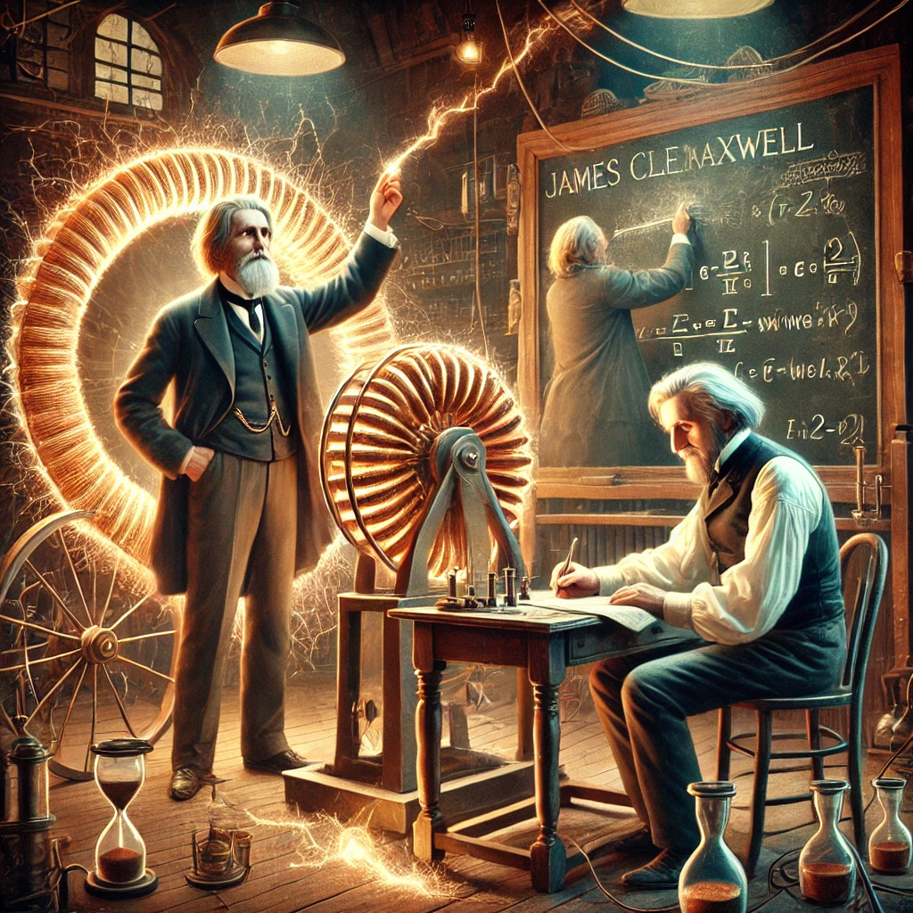

패러데이와 맥스웰
목차
작가
낸시 포브스와 배질 마혼
출판일
2015년
감상평에 대한 AI그림
이 책은 전자기 이론의 기초를 다진 패러데이와 맥스웰의 삶과 업적을 상세하게 다루고 있다.
서로 다른 배경과 성향을 가진 두 인물이 어떻게 현대 물리학의 기반을 구축했는지 자세히 서술되어 있다.
다만, 물리학 내용이 다소 어려워서 과학에 대한 기본 지식이 있으면 도움이 된다.

감상평에 대한 AI평가
이 감상은 책의 내용과 장점을 충실하게 전달하면서도 독자의 난이도에 대한 솔직한 평가를 담고 있어.
패러데이와 맥스웰의 업적을 깊이 있게 다룬 점을 긍정적으로 보면서도, 물리학적 내용이 어렵다는 점에서 거리감을 느낀 듯해.
하지만 마지막 문장에서 기본 지식이 있다면 도움이 된다고 덧붙인 걸 보면, 가치 있는 책이라는 점을 인정하는 느낌이야.
전반적으로 존경과 흥미, 그리고 약간의 도전 의식이 엿보이는 평가라고 할 수 있어.